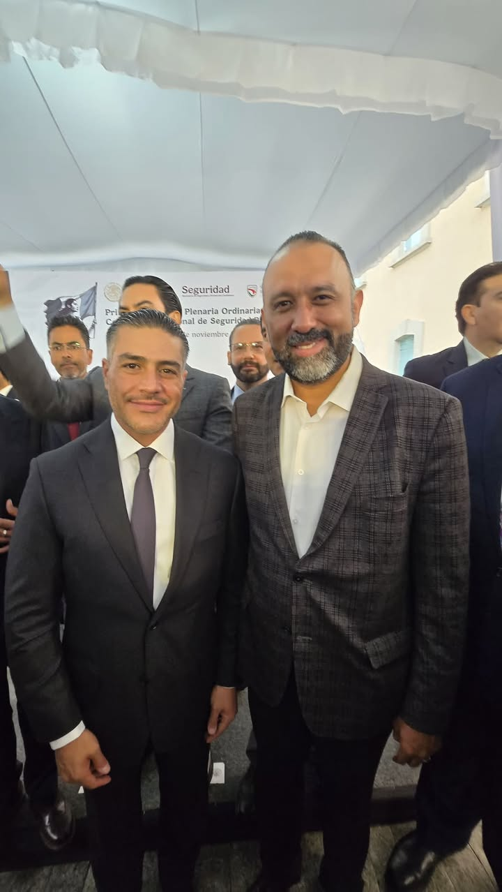
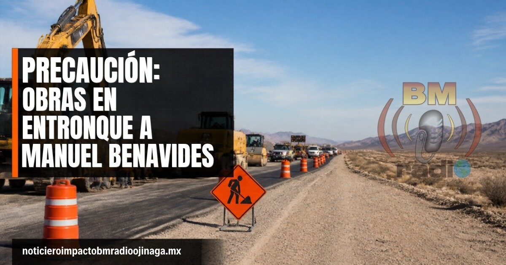
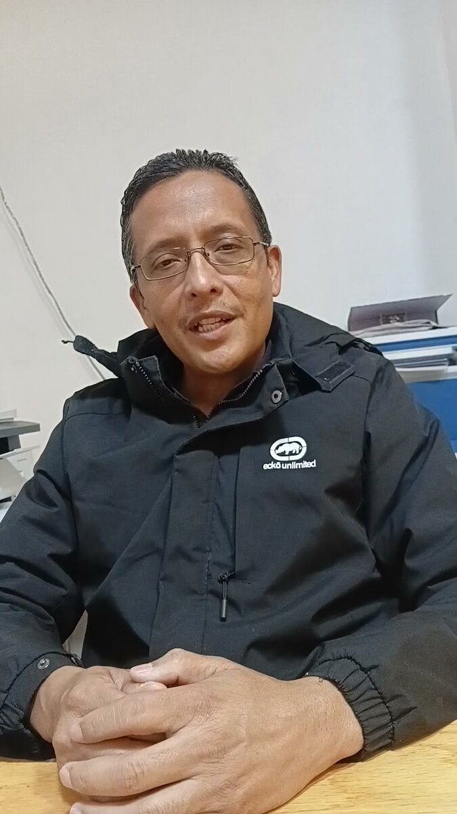
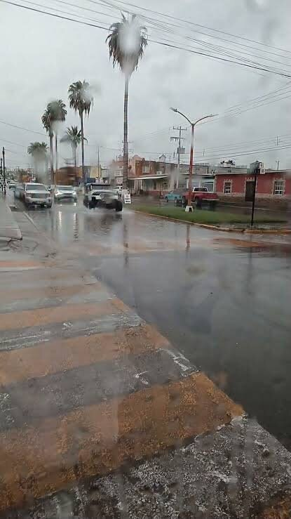
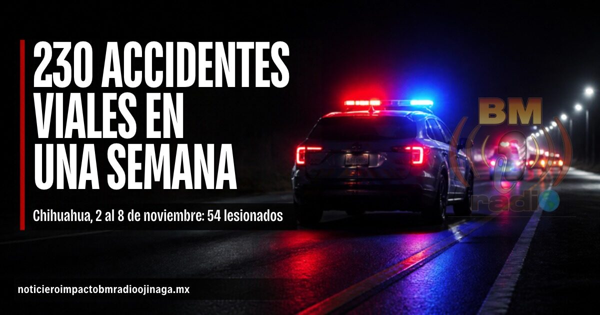

Nacional
Hoy inicia El Buen Fin, que se extiende hasta el martes 17 de noviembre. La Profeco detectó diferencias de hasta 9 mil 309 pesos en el precio de un mismo refrigerador, según la tienda. Recomienda revisar cuánto costaba el producto antes, comparar entre tiendas y consultar el comparador en elbuenfin.profeco.gob.mx antes de comprar.
Nacional
El presidente de Estados Unidos, Donald Trump, advirtió en su red social que duplicará los aranceles a México si no se detienen las caravanas migrantes. La presidenta Claudia Sheinbaum respondió este jueves que, desde que Trump llegó al gobierno, ninguna caravana ha llegado a la frontera norte, y señaló que en el grupo que salió de Arriaga, Chiapas, quedan unas 100 personas activas. Una medida así afectaría directamente el comercio en la frontera.
Estatal
Este sábado 14 de noviembre, los tres poderes del Estado se trasladarán a Cuchillo Parado, en el municipio de Coyame del Sotol, para celebrar una Sesión Solemne del Congreso. Con ella se conmemoran 116 años del levantamiento encabezado por Toribio Ortega y cerca de 70 hombres que, en 1910, se adelantaron al llamado de Francisco I. Madero.
Local
De acuerdo con la actualización de Protección Civil del Estado, en Ojinaga podrían acumularse hasta 25 milímetros de lluvia este viernes 13 de noviembre. El día será templado, con máxima cercana a 26 °C, pero hacia la noche entra viento del norte con rachas de hasta 40 km/h y posibilidad de lluvia o tormenta. Se recomienda no cruzar arroyos ni vados con corriente, manejar con precaución, asegurar objetos sueltos y, si usa calentador, no dormir con él encendido y dejar una ventana abierta.
Nacional
El dólar estadounidense inició este viernes 13 de noviembre con una cotización estable frente al peso mexicano en las principales sucursales bancarias. De acuerdo con los precios de referencia de Banamex, la divisa se vende en 19.08 pesos y se compra en 18.04 pesos, sin cambios respecto al jueves. En las casas de cambio, el dólar registra un precio aproximado de 18.52 pesos a la venta y 17.54 pesos a la compra. Se recomienda a quienes necesiten realizar operaciones verificar la cotización directamente en cada establecimiento, ya que los precios pueden variar.

Estatal
El presidente municipal de Ciudad Juárez, Héctor Rafael Ortiz Orpinel, participó en la primera Asamblea Plenaria Ordinaria 2026 de la Conferencia Nacional de Seguridad Pública Municipal, donde destacó una tendencia a la baja en diversos delitos en la ciudad. Durante el encuentro, en el que estuvo presente el secretario de Seguridad y Protección Ciudadana, Omar García Harfuch, se analizaron las principales estrategias y líneas de trabajo que se impulsarán en materia de seguridad pública durante 2027. Ortiz Orpinel atribuyó los avances a la coordinación entre los distintos órdenes de Gobierno y la participación ciudadana, aunque reconoció que todavía existen retos importantes por atender. El alcalde señaló que su administración continuará fortaleciendo las acciones de prevención, vigilancia y coordinación institucional, con el objetivo de mejorar las condiciones de seguridad para las familias juarenses. Asimismo, expresó que el reconocimiento al trabajo realizado en Ciudad Juárez representa un compromiso para mantener las estrategias que, según indicó, han contribuido a reducir la incidencia delictiva.

Local
Continúan los trabajos de rehabilitación en el entronque de la carretera a Manuel Benavides, por lo que se pide a los automovilistas reducir la velocidad, manejar con precaución y respetar los señalamientos y las indicaciones del personal de obra. Se recomienda tomar en cuenta posibles retrasos al circular por la zona, sobre todo con las lluvias previstas para los próximos días.
Frontera
Los paisanos que ingresen a México por el cruce fronterizo Ojinaga-Presidio y enfrenten abusos, cobros indebidos o irregularidades por parte de autoridades aduaneras pueden recibir asesoría y representación legal gratuita de la Procuraduría de la Defensa del Contribuyente (PRODECON). La dependencia informó que los viajeros tienen derecho a ingresar equipaje personal y mercancías con una franquicia de hasta 500 dólares por pasajero, de acuerdo con las disposiciones aduaneras. Ante cualquier irregularidad, se recomienda documentar los hechos, anotar los datos del servidor público involucrado y, de ser posible, tomar fotografías o videos como evidencia. Para recibir asesoría o presentar una queja, los paisanos pueden comunicarse al 55 1205 9000 o consultar www.prodecon.gob.mx. El llamado es a quienes regresan por Ojinaga a conocer sus derechos y denunciar cualquier abuso durante su ingreso a territorio mexicano.
Policiaca
La CIA habría encontrado en Guillermo Arturo Zuany Portillo, entonces fiscal especializado en Operaciones Estratégicas y Antisecuestro de Chihuahua, un aliado para desarrollar operaciones secretas contra el narcotráfico. De acuerdo con una investigación de The New York Times, el exfuncionario facilitó el acceso de agentes estadounidenses a corporaciones policiacas estatales, pese a que el FBI investigaba sus presuntos vínculos con organizaciones criminales. Según el reportaje, Estados Unidos le había cancelado previamente la visa por esos señalamientos, pero Zuany habría recuperado el documento como parte de la colaboración con la agencia de inteligencia. Durante más de seis meses, habría facilitado entrenamientos, planeación y participación de agentes de la CIA en operativos junto a policías de Chihuahua. Zuany Portillo permanece prófugo y enfrenta órdenes de aprehensión de la Fiscalía estatal y de la Fiscalía General de la República. Este martes, Omar García Harfuch confirmó la existencia de ambos mandamientos judiciales, relacionados con las investigaciones por la participación de agentes estadounidenses en operaciones de seguridad en Chihuahua.

Local
En este video, el licenciado Homero Pérez Tarín, director de Desarrollo Social de Ojinaga, informa que se solicita medicamento en donación para el centro comunitario y que se brinda atención al albergue del campo menonita El Oasis. Mira el video completo en Facebook.
Local
En este video, César Sáenz Holguín, director del Instituto Municipal del Deporte, informa que se trabaja rumbo al campeonato estatal de basquetbol y que Jaime Bustamante será el jurisdiccional de la 7a zona de beisbol. Mira el video completo en Facebook.
Local
En este video, el licenciado Elam López Olivas, presidente del Comité Municipal del PRI en Ojinaga, habla de la campaña de lentes, la promoción de tinacos y boilers, y del trabajo político rumbo a 2027. Mira el video completo en Facebook.
Estatal
La Secretaría de Educación y Deporte del Estado anunció que el viernes 20 de noviembre se suspenderán las clases en todas las escuelas de educación básica de Chihuahua: inicial, preescolar, primaria y secundaria. La medida es por el 116 aniversario del inicio de la Revolución Mexicana, para que alumnos, docentes y familias puedan asistir a los desfiles cívico-deportivos en cada municipio, incluido Ojinaga.
Local
En este video, el contador público Óscar Valenzuela Rodríguez, oficial mayor del Municipio de Ojinaga, informa que el próximo martes se realizará una subasta de vehículos en desuso y que se lanzará la convocatoria para el presupuesto participativo 2026. Mira el video completo en Facebook.
Estatal
Alejandro Jiménez anuncia su respaldo al alcalde juarense y señala diferencias con el rumbo actual de Acción Nacional. El regidor de Ciudad Juárez, Alejandro Jiménez, anunció su renuncia al Partido Acción Nacional (PAN) y su incorporación al proyecto político de Cruz Pérez Cuéllar. A través de un posicionamiento público, el edil expresó su respaldo al alcalde juarense y manifestó su decisión de sumarse a su equipo, en medio del escenario político rumbo al proceso electoral de 2027. Jiménez señaló que su salida del PAN responde a inconformidades con el manejo actual del partido. “Hoy quiero mostrarle mi apoyo al licenciado Cruz Pérez Cuéllar y por eso me uno a su proyecto. Es la mejor opción para que Chihuahua tenga un mejor cambio, hasta donde tope y vamos a ganar”, expresó. Con esta decisión, Alejandro Jiménez deja las filas del PAN y anuncia su participación en el proyecto político que encabeza Cruz Pérez Cuéllar.

Estatal
La Coordinación Estatal de Protección Civil (CEPC) alertó sobre lluvias, fuertes ráfagas de viento y descenso de temperaturas durante este jueves y viernes en Chihuahua. Para el viernes 13 de noviembre se pronostican vientos superiores a los 55 kilómetros por hora, con posibles tolvaneras y reducción de visibilidad en carreteras. Ojinaga destaca entre los municipios con mayor pronóstico de lluvia, donde podrían acumularse entre 25 y 50 milímetros, con precipitaciones de moderadas a puntualmente fuertes. Además, durante la madrugada del sábado existe posibilidad de aguanieve en las zonas altas de la Sierra Tarahumara. Protección Civil recomendó a la población conducir con precaución, reducir la velocidad ante las tolvaneras, evitar cruzar arroyos o zonas inundadas y mantenerse atentos a los avisos oficiales.
Estatal
El Ayuntamiento de Ciudad Juárez aprobó incorporar al Reglamento Interior del Comité Municipal de Salud un Subcomité Permanente para la Atención de Enfermedades de Transmisión Sexual y VIH, con el objetivo de fortalecer la prevención, atención y coordinación en materia de salud pública. La medida permitirá mantener acciones permanentes entre dependencias municipales, autoridades de salud y organizaciones civiles, independientemente de los cambios de administración. Durante la sesión ordinaria de Cabildo número 52, también se autorizó un subsidio a cinco asociaciones civiles que trabajan en la prevención y atención de la violencia contra mujeres, niñas, niños y adolescentes. Las organizaciones beneficiadas son Casa Amiga Esther Chávez Cano, Centro de Crisis, Programa Compañeros, Red Mesa de Mujeres y Sin Violencia. Los recursos permitirán dar continuidad a programas de atención y acompañamiento a víctimas. Además, el Cabildo aprobó pensiones por invalidez e incapacidad permanente para trabajadores municipales, conforme a los porcentajes establecidos según cada caso.
Estatal
Cruz Pérez Cuéllar, coordinador estatal de la Defensa de la Transformación en Chihuahua, señaló que los diputados del PAN y del PRI votaron en contra del Presupuesto de Egresos 2027, aprobado con 372 votos a favor y 102 en contra. Según Pérez Cuéllar, ya había advertido ese voto y la votación lo confirmó. Afirmó que los programas sociales son derechos adquiridos de las y los mexicanos. El presupuesto destina 1.025 billones de pesos a programas sociales.

Estatal
Del 2 al 8 de noviembre se registraron 230 accidentes viales en el estado, con 54 personas lesionadas y sin víctimas mortales, según las autoridades. Solo del 6 al 8 de noviembre hubo 107 percances, y 28 personas fueron remitidas por manejar en estado de ebriedad. Con el fin de semana largo y el Buen Fin, se pide manejar con precaución.
Nacional
El Banco de México informó que el programa Directo a México, que permite enviar dinero de cuentas bancarias en Estados Unidos a cuentas en México, dejará de operar el 20 de noviembre de 2026. La Reserva Federal de EU decidió suspender el servicio. Según Banxico, la mayor parte de estos envíos corresponde a pagos de pensiones del gobierno estadounidense. Las operaciones hechas antes del cierre se procesarán normalmente. Quienes reciben su pensión por esta vía deben consultar con su banco o con la dependencia que les paga cómo la recibirán después.